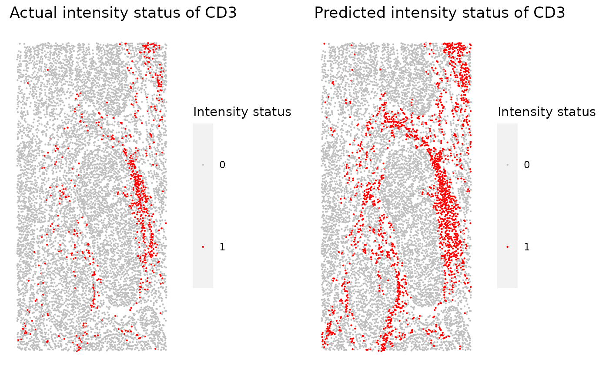

Overview of the SPIAT package
Anna Trigos, Tom Yang, Volkan Ozkoban
16 August 2020
Source:vignettes/introduction.Rmd
introduction.RmdIntroduction
SPIAT (Spatial Image Analysis of Tissues) is an R package with a suite of data processing, quality control, visualization, data handling and data analysis tools. SPIAT includes our novel algorithms for the identification of cell clusters, cell margins and cell gradients, the calculation of neighbourhood proportions, and algorithms for the prediction of cell phenotypes. SPIAT also includes speedy implementations of the calculation of cell distances and detection of cell communities. This version of SPIAT is directly compatible with Opal multiplex immunohistochemistry images analysed through the HALO and InForm analysis software, but its intuitive implementation allows use with a diversity of platforms.

Setting up the data
# load library library(SPIAT) # specify markers markers <- c("DAPI","CD3","PDL1","FOXP3","CD4","CD8","AMACR") markers
## [1] "DAPI" "CD3" "PDL1" "FOXP3" "CD4" "CD8" "AMACR"# specify columns of interest intensity_columns_interest <- c("Nucleus DAPI (DAPI) Mean (Normalized Counts, Total Weighting)","Cytoplasm CD3 (Opal 520) Mean (Normalized Counts, Total Weighting)", "Membrane PDL-1 (Opal 540) Mean (Normalized Counts, Total Weighting)", "Cytoplasm FOXP3 (Opal 570) Mean (Normalized Counts, Total Weighting)", "Cytoplasm CD4 (Opal 620) Mean (Normalized Counts, Total Weighting)", "Cytoplasm CD8 (Opal 650) Mean (Normalized Counts, Total Weighting)", "Cytoplasm AMACR (Opal 690) Mean (Normalized Counts, Total Weighting)") intensity_columns_interest
## [1] "Nucleus DAPI (DAPI) Mean (Normalized Counts, Total Weighting)"
## [2] "Cytoplasm CD3 (Opal 520) Mean (Normalized Counts, Total Weighting)"
## [3] "Membrane PDL-1 (Opal 540) Mean (Normalized Counts, Total Weighting)"
## [4] "Cytoplasm FOXP3 (Opal 570) Mean (Normalized Counts, Total Weighting)"
## [5] "Cytoplasm CD4 (Opal 620) Mean (Normalized Counts, Total Weighting)"
## [6] "Cytoplasm CD8 (Opal 650) Mean (Normalized Counts, Total Weighting)"
## [7] "Cytoplasm AMACR (Opal 690) Mean (Normalized Counts, Total Weighting)"# load example data data("formatted_image")
formatted_image contains example Inform data already formatted. To load data from a raw Inform file, example code is below.
#####Initializing#####
#Formats an INFORM or HALO image into a singlecellexperiment class
#where the count assay stores the expression level of every marker (rows) for
#every cell (columns), and cell phenotype, x and y coordinates are stored
#under colData
#formatted_image <- format_image_to_sce(format="INFORM",
#image=raw_inform_data,
#markers=markers,
#dye_columns_interest=NULL,
#intensity_columns_interest=intensity_columns_interest)Select the phenotypes in the image.
print_phenotypes(formatted_image)
## [1] "AMACR" "CD3,CD4" "CD3,CD8" "PDL1"formatted_image <- select_phenotypes(formatted_image, keep=TRUE, phenotypes = c("AMACR", "CD3,CD4", "CD3,CD8", "CD3,CD8", "CD3,CD4,FOXP3", "PDL1", "AMACR,PDL1"))
Cell proportions/percentages
Calculate the number and proportion of each cell phenotype in image.
p_cells <- calculate_cell_proportions(sce_object = formatted_image) p_cells
## Cell_type Number_of_cells Proportion Percentage
## 1 AMACR 4446 0.87159381 87.159381
## 2 CD3,CD4 513 0.10056852 10.056852
## 3 CD3,CD8 138 0.02705352 2.705352
## 4 PDL1 4 0.00078416 0.078416Plot cells proportions as barplots
plot_cell_percentages(p_cells)

Visualizations
Boxplots
Produces boxplots of marker levels for cells phenotyped as being positive for the marker, and those that where phenotyped as being negative.
marker_expression_boxplot(formatted_image, "CD3")

marker_expression_boxplot(formatted_image, "PDL1")

# marker_expression_boxplot(formatted_image, "FOXP3") # Commenting out FOXP3 as otherwise get # "Error in marker_expression_boxplot(formatted_image, "FOXP3") : There are no cells positive for FOXP3" marker_expression_boxplot(formatted_image, "CD4")

marker_expression_boxplot(formatted_image, "CD8")

marker_expression_boxplot(formatted_image, "AMACR")

Categorical plot
phenotypes_of_interest <- c("AMACR", "CD3,CD4", "CD3,CD8") colour_vector <- c("darkgrey", "red", "blue") plot_cell_categories(formatted_image, phenotypes_of_interest, colour_vector)

Heatmaps
Blurs the image by splitting the images into small squares. The marker levels are then averaged within each square. All cells are considered
plot_marker_level_heatmap(formatted_image, num_splits = 100, "CD3")

plot_marker_level_heatmap(formatted_image, num_splits = 100, "PDL1")

plot_marker_level_heatmap(formatted_image, num_splits = 100, "FOXP3")

plot_marker_level_heatmap(formatted_image, num_splits = 100, "CD4")

plot_marker_level_heatmap(formatted_image, num_splits = 100, "CD8")

plot_marker_level_heatmap(formatted_image, num_splits = 100, "AMACR")

3D surface plot
Generates a 3D surface plot of the level of the selected marker. Note that the image is blurred based on the ‘num_splits’ parameter.
marker_surface_plot(formatted_image, num_splits=15, marker="CD3")
3D stacked surface plot
Generates stacked 3D surface plots showing normalized expression level of specified markers.
marker_surface_plot_stack(formatted_image, num_splits=10, markers=c("CD4", "AMACR"))
Scatter plots
Produces a scatter plot of the expression of every marker in each cell. Cells that were not phenotyped as being positive for the particular marker are excluded.
plot_cell_marker_levels(formatted_image, return_data = FALSE)


## [1] "There are no true expression for: FOXP3"


Split images
Takes in a singlecellexperiment object from format_image_to_sce, splits the image into specified sections and plots the different combinations of markers within the image segments.
split_image <- image_splitter(formatted_image, number_of_splits=3)
Cell mixing
Returns the mixing score between a reference marker and a target marker. The mixing score is defined by: the number of target-reference interactions/number of reference-reference interactions within a specified radius.
compute_mixing_score(formatted_image, reference_marker = "CD4", target_marker = "PDL1")
## [1] "Number of reference cells: 513"
## [1] "Number of target cells: 4"
## [1] "Number of reference-target interactions: 4"
## [1] "Number of reference-reference interactions: 412"## [1] 0.009708738compute_mixing_score(formatted_image, reference_marker = "CD4", target_marker = "CD8")
## [1] "Number of reference cells: 513"
## [1] "Number of target cells: 138"
## [1] "Number of reference-target interactions: 67"
## [1] "Number of reference-reference interactions: 412"## [1] 0.1626214compute_mixing_score(formatted_image, reference_marker = "CD8", target_marker = "CD4")
## [1] "Number of reference cells: 138"
## [1] "Number of target cells: 513"
## [1] "Number of reference-target interactions: 67"
## [1] "Number of reference-reference interactions: 60"## [1] 1.116667Marker intensities within radii
Calculation of marker expression levels within a radius
Calculates the average intensity of the target_marker within a radius from the cells positive for the reference marker. Note that it pools all cells with the target marker that are within the specific radius of any reference cell. Results represent the average intensities within a radius, but do not correspond to metrics for each cell
average_marker_expression_within_radius(formatted_image, reference_marker ="AMACR", target_marker = "CD3", radius=30)
## [1] 3.513658Takes in a vector or radii and calculates the average expression of a target marker using average_expression function. It plots the expression level as a line graph.
plot_average_expression(formatted_image, reference_marker="AMACR", target_marker="CD4", c(30, 35, 40, 45, 50, 75, 100))
#Commenting out below as get: # "Error in average_marker_expression_within_radius(sce_object, reference_marker, : There are no target cells within the specified radius, cannot calculate average expression" #plot_average_expression(formatted_image, reference_marker="AMACR", target_marker="PDL1", c(30, 35, 40, 45, 50, 75, 100))
plot_average_expression(formatted_image, reference_marker="CD4", target_marker="CD8", c(30, 35, 40, 45, 50, 75, 100))

plot_average_expression(formatted_image, reference_marker="CD8", target_marker="CD4", c(30, 35, 40, 45, 50, 75, 100))

Distances between phenotypes
Calculates the average minimum distance of all cells in the sce_object
average_minimum_distance(formatted_image) #between cells
## [1] 16.99093Returns the mean, median and standard deviation of the distances between phenotypes
summary_distances <- calculate_summary_distances_between_phenotypes(formatted_image)
## [1] "All markers are used in pair-wise distance calculation: "
## [1] "AMACR" "CD3,CD4" "CD3,CD8" "PDL1"Takes the output of cell_distances and plot the distances as a heatmap
plot_distance_heatmap(summary_distances)

Returns the distances between cells of different phenotypes
distances <- calculate_all_distances_between_phenotypes(formatted_image, remove_other = TRUE, cell_phenotypes_of_interest = c("CD3,CD4", "CD3,CD8")) plot_cell_distances_violin(distances)
## Warning: Removed 513 rows containing non-finite values (stat_ydensity).


## Warning: Removed 138 rows containing non-finite values (stat_ydensity).
distances <- calculate_all_distances_between_phenotypes(formatted_image, remove_other = TRUE, cell_phenotypes_of_interest = c("AMACR", "CD3,CD8"))
Plots distances between cells as a violin plot
plot_cell_distances_violin(distances)
## Warning: Removed 4446 rows containing non-finite values (stat_ydensity).


## Warning: Removed 138 rows containing non-finite values (stat_ydensity).
Clustering and communities
Uses Euclidean distances to identify clusters of cells within a specified radius.
clusters <- identify_cell_clusters(formatted_image, phenotypes_of_interest = c("CD3,CD4", "CD3,CD8"), radius = 30)
## Warning: Removed 88 rows containing missing values (geom_text).
Identifies communities of cells based on their location. It excludes cells without a phenotype
communities <- identify_cell_communities(formatted_image, radius=100)
## Warning: Use of `formatted_data$Community` is discouraged. Use `Community`
## instead.## Warning: Use of `formatted_data$Cell.X.Position` is discouraged. Use
## `Cell.X.Position` instead.## Warning: Use of `formatted_data$Cell.Y.Position` is discouraged. Use
## `Cell.Y.Position` instead.
# Adding radius=100 as dbscan needs a radius supplied. Not sure if 100 is appropriate but gives 10 communities (Rphenograph gave 17) but increasing or decreasing the radius gives less
Specific marker within each cluster and the number of cells in the cluster.
clusters_2 <- composition_of_clusters_and_communities(clusters, "Cluster") clusters_2 <- clusters_2[clusters_2$Total_number_of_cells >=5,]
Produces a heatmap showing the marker percentages within each cluster and the cluster sizes
plot_composition_heatmap(clusters_2, column_to_consider="Cluster")

communities_2 <- composition_of_clusters_and_communities(communities, "Community") plot_composition_heatmap(communities_2, column_to_consider="Community")
communities_3 <- communities_2[communities_2$Phenotype != "AMACR",] plot_composition_heatmap(communities_3, column_to_consider="Community")

Neighbourhood proportions
Calculate the percentage of cells surrounding another phenotype
Calculates the percentage of cells of a target phenotype within a radius from the cells with a reference phenotype. The calculation is done per reference cell, so runtime will depend on the number of reference cells present.
#Commenting out below as get: # "Error in percentage_of_cells_within_radius(formatted_image, reference_phenotypes = "CD3", : There are no reference cells or no target cells, calculation aborted" #percentage_of_cells_within_radius(formatted_image, reference_phenotypes = "CD3", # target_phenotypes = "AMACR", radius=100)
identify_bordering_cells(formatted_image, reference_marker = "AMACR", rm_noise_radius = 50, radius = 100, lower_bound = 0.05, upper_bound=0.7)

Get p-value for phenotypes
Creates random combinations of phenotypes by shuffling markers and calculates the enrichment and depletion p values
# Commenting out below as get: # "Error in `$<-.data.frame`(`*tmp*`, Phenotype, value = "FOXP3,") : replacement has 1 row, data has 0" #sig <- marker_permutation(formatted_image, num_iter = 100)
Predict phenotypes
Predict phenotypes based on marker expression levels
Produces a density plot showing actual and predicted cutoff of a positive reading for marker expression. It also prints to the console of the number of true positives (TP), true negatives (TN), false positives (FP) and false negatives (FN) under the prediction. It returns a dataframe containing the predicted expression status for a particular marker
# Commenting out below as get:
# Error in `$<-.data.frame`(`*tmp*`, Phenotype, value = "FOXP3,") : replacement has 1 row, data has 0"
# #predicted_image <- predict_phenotypes(formatted_image,
# plot_actual_cutoff = TRUE,
# plot_predicted_cutoff = TRUE,
# thresholds = NULL,
# tumour_marker = "AMACR",
# baseline_markers = c("CD3", "CD4", "CD8"))Takes in the returned dataframe from marker_threshold_plot and generates a .pdf file containing scatter plots of actual expression and predicted expression for every marker.
# Commenting out as no predicted_image at moment #marker_prediction_plot(predicted_image, marker="AMACR") #marker_prediction_plot(predicted_image, marker="CD4") #marker_prediction_plot(predicted_image, marker="CD8")
Reproducibility
## R version 4.0.2 Patched (2020-08-13 r79017)
## Platform: x86_64-pc-linux-gnu (64-bit)
## Running under: Ubuntu 20.04 LTS
##
## Matrix products: default
## BLAS/LAPACK: /usr/lib/x86_64-linux-gnu/openblas-openmp/libopenblasp-r0.3.8.so
##
## locale:
## [1] LC_CTYPE=en_US.UTF-8 LC_NUMERIC=C
## [3] LC_TIME=en_US.UTF-8 LC_COLLATE=en_US.UTF-8
## [5] LC_MONETARY=en_US.UTF-8 LC_MESSAGES=C
## [7] LC_PAPER=en_US.UTF-8 LC_NAME=C
## [9] LC_ADDRESS=C LC_TELEPHONE=C
## [11] LC_MEASUREMENT=en_US.UTF-8 LC_IDENTIFICATION=C
##
## attached base packages:
## [1] parallel stats4 stats graphics grDevices utils datasets
## [8] methods base
##
## other attached packages:
## [1] SPIAT_0.3 SingleCellExperiment_1.11.6
## [3] SummarizedExperiment_1.19.6 DelayedArray_0.15.7
## [5] matrixStats_0.56.0 Matrix_1.2-18
## [7] Biobase_2.49.0 GenomicRanges_1.41.6
## [9] GenomeInfoDb_1.25.10 IRanges_2.23.10
## [11] S4Vectors_0.27.12 BiocGenerics_0.35.4
## [13] BiocStyle_2.17.0
##
## loaded via a namespace (and not attached):
## [1] httr_1.4.2 tidyr_1.1.1 jsonlite_1.7.0
## [4] viridisLite_0.3.0 gtools_3.8.2 assertthat_0.2.1
## [7] BiocManager_1.30.10 GenomeInfoDbData_1.2.3 yaml_2.2.1
## [10] pillar_1.4.6 backports_1.1.8 lattice_0.20-41
## [13] glue_1.4.1 digest_0.6.25 RColorBrewer_1.1-2
## [16] XVector_0.29.3 colorspace_1.4-1 plyr_1.8.6
## [19] htmltools_0.5.0 pkgconfig_2.0.3 pheatmap_1.0.12
## [22] bookdown_0.20 zlibbioc_1.35.0 purrr_0.3.4
## [25] scales_1.1.1 RANN_2.6.1 pracma_2.2.9
## [28] tibble_3.0.3 farver_2.0.3 generics_0.0.2
## [31] dbscan_1.1-5 ggplot2_3.3.2 ellipsis_0.3.1
## [34] lazyeval_0.2.2 magrittr_1.5 crayon_1.3.4
## [37] memoise_1.1.0 evaluate_0.14 apcluster_1.4.8
## [40] fs_1.5.0 MASS_7.3-51.6 tools_4.0.2
## [43] data.table_1.13.0 lifecycle_0.2.0 stringr_1.4.0
## [46] plotly_4.9.2.1 munsell_0.5.0 compiler_4.0.2
## [49] pkgdown_1.5.1 rlang_0.4.7 grid_4.0.2
## [52] RCurl_1.98-1.2 htmlwidgets_1.5.1 crosstalk_1.1.0.1
## [55] labeling_0.3 bitops_1.0-6 rmarkdown_2.3
## [58] gtable_0.3.0 mmand_1.6.1 reshape2_1.4.4
## [61] R6_2.4.1 gridExtra_2.3 knitr_1.29
## [64] dplyr_1.0.1 rprojroot_1.3-2 desc_1.2.0
## [67] stringi_1.4.6 Rcpp_1.0.5 vctrs_0.3.2
## [70] tidyselect_1.1.0 xfun_0.16